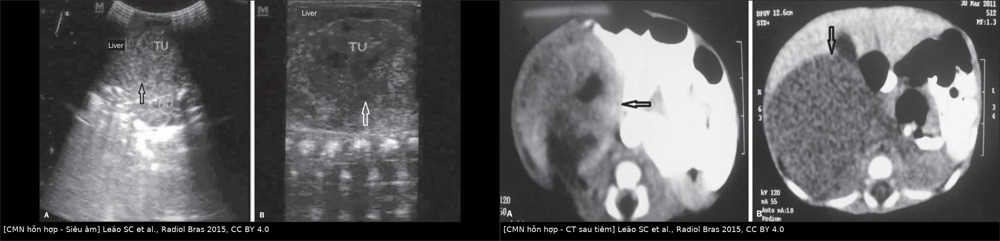
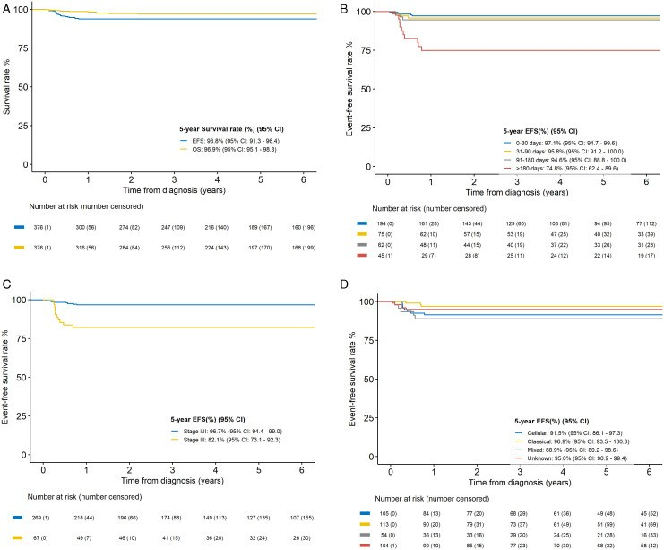
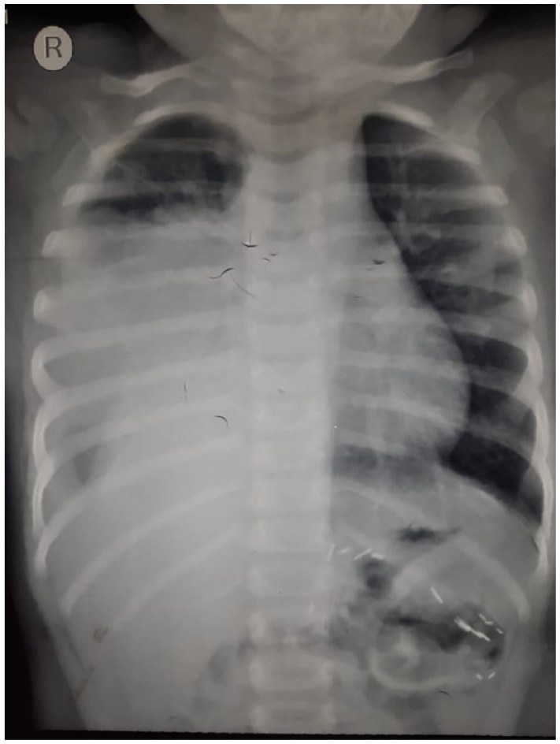
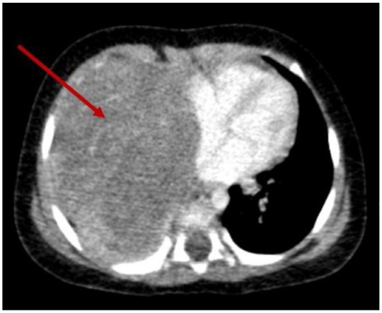
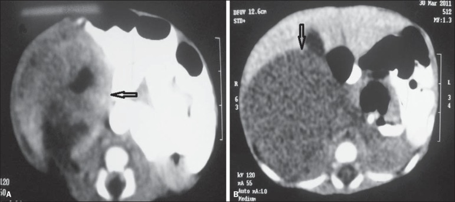

647 — U cơ trung mô bẩm sinh thể tế bào: theo dõi sau cắt thận, tái phát/di căn & điều trị đích / Cellular congenital mesoblastic nephroma: post-nephrectomy surveillance, relapse and targeted therapy
Tags: pattern:u-co-trung-mo pattern:tai-phat-sau-cat-than pattern:di-can-phoi vung:than vung:o-bung-nhi score:SIOP protocol:US-theo-doi protocol:CT-nguc incidentaloma:khong
Mức chắc chắn (certainty): tổng hợp y văn (literature synthesis) — đoàn hệ 376 ca SIOP/UK-IMPORT/AIEOP (Quarello P et al., PLoS One 2026, PMC13210389) + ca nguyên văn di căn phổi (Athapathu AS et al., SAGE Open Med Case Rep 2023, PMC10750505) và các ca tái phát có đột biến phân tử (Sun M et al., Transl Pediatr 2024, PMC11228910; Li J et al., Transl Pediatr 2026, PMC12969158).
1. Tổng quan — vì sao CMN "lành" vẫn phải theo dõi
- U cơ trung mô bẩm sinh (congenital mesoblastic nephroma — CMN) là u thận đặc hay gặp nhất ở trẻ dưới 6 tháng, chiếm 2–5% u thận nhi; tuổi trung vị trong đoàn hệ 376 ca là 28 ngày (0–953 ngày).
- Ba thể mô học — ba chương trình phân tử:
- Thể kinh điển (classic, 41,5%): tế bào hình thoi lành, ít phân bào; đột biến lặp đoạn nội bộ gen EGFR (EGFR internal tandem duplication — EGFR-ITD) ở phần lớn ca.
- Thể tế bào (cellular, 38,6%): tăng sinh dày đặc, nhiều phân bào, hoại tử/xuất huyết/nang; dung hợp ETV6::NTRK3 — t(12;15)(p13;q25) — ở ~70% ca, cùng phổ với u sợi bẩm sinh (infantile fibrosarcoma).
- Thể hỗn hợp (mixed, 19,9%): trung gian; phân tử ít được định nghĩa, một phần mang EGFR-ITD.
- TẠI SAO thể tế bào khác biệt trên hình ảnh: mật độ tế bào cao + hoại tử + xuất huyết + nang → T2 không đồng nhất, T1 tăng tín hiệu vùng xuất huyết, ngấm thuốc không đồng nhất, không vôi hóa; thể kinh điển đồng nhất, T2 đồng tín hiệu, ngấm đồng nhất và có dấu vòng đồng tâm (concentric ring sign). Đây là lý do hình ảnh không thể thay mô học để quyết định theo dõi.
- TẠI SAO phải theo dõi dù đa số khỏi: dung hợp ETV6::NTRK3 hoạt hóa con đường RAS–MAPK liên tục; thể tế bào có thể tái phát tại chỗ hoặc di căn phổi/gan/tinh hoàn. Đoàn hệ 376 ca: EFS 5 năm 93,8%, OS 96,9%, tỷ suất tái phát tích lũy 5 năm 5,3% — tức ~1/20 trẻ vẫn có biến cố.
- Số liệu định lượng nằm lòng (Quarello P et al., PMC13210389):
- 18 ca tái phát; 16 ca có dữ liệu vị trí: 12 tại chỗ, 2 phổi, 1 gan, 1 tinh hoàn.
- Thời gian tái phát trung vị 3,6 tháng (1–9,5 tháng) — rất sớm, không phải "vài năm sau".
- Tái phát theo giai đoạn: I 2,2% · II 2,8% · III 16,4%.
- EFS 5 năm theo giai đoạn: I 98,7%, II 96,2%, III 82,1%; OS tương ứng 98,7% / 98,1% / 93,2%.
- EFS theo thể: thể tế bào 91,5%, thể hỗn hợp 93,3%, thể kinh điển 96,9% — khác biệt không có ý nghĩa thống kê, và 3/16 ca tái phát là thể kinh điển → không được loại trừ thể kinh điển.
- Tuổi > 6 tháng lúc chẩn đoán: EFS 5 năm chỉ 74,8% (so với 97,1–100% ở nhóm ≤ 6 tháng).
- Hóa trị trước mổ: 21% ca được hóa trị trước; 60% giảm thể tích đo được, 13,3% ổn định, 26,7% tăng; không liên quan rõ với thể mô học (p = 0,22). Vì vậy không dùng "đáp ứng hóa trị" để suy ra thể.
- Điều trị bổ trợ sau mổ còn tranh luận: chỉ 17,3% ca giai đoạn III nhận hóa trị bổ trợ; một số chuỗi cho thấy 32,5% tái phát khi không hóa trị so với 8–11% khi có, nhưng lợi ích chưa được chứng minh ngay cả ở thể tế bào → quyết định theo hội đồng đa chuyên khoa, không theo "thể tế bào = phải hóa trị".

Trái — siêu âm: khối hỗn hợp đặc–giảm âm, bờ rõ, chen giữa gan và thận phải (TU); phải — CT sau tiêm: khối lớn không đồng nhất, vùng hoại tử/giảm đậm độ trung tâm, ngấm thuốc không đều. Hình thái này không phân biệt được thể tế bào với thể hỗn hợp — chốt là mô học. Leão SC et al., Radiol Bras 2015 (PMC4725402, Fig. 1–2), CC BY 4.0; ảnh ghép letterbox, không crop.2. Mẫu hình + chẩn đoán phân biệt của "khối mới sau cắt thận" (Gamut)
Đọc theo vị trí trước, thời gian sau:
- Tại giường cắt thận (ổ bụng sau phúc mạc):
- Tái phát tại chỗ — hay gặp nhất (12/16 ca), thường < 12 tháng, đa số < 4 tháng.
- Dịch tụ sau mổ — lymphocele/seroma (dịch, không ngấm, giảm dần), máu tụ (tăng đậm độ, thay đổi theo thời gian), áp-xe (viền ngấm + khí, sốt).
- Sẹo xơ/tổ chức hạt — bờ không đều nhưng ổn định qua các lần, không ngấm tiến triển.
- Phì đại bù của thận còn lại — thận to đồng nhất, giữ hình thận, không có khối, chức năng bình thường.
- U nguyên bào thận đồng thời/đối bên — hiếm ở CMN nhưng phải loại trừ, nhất là có hội chứng dễ mắc (bài 648).
- Ngoài ổ bụng:
- Di căn phổi — 2/16 ca, có thể rất lớn, hoại tử trung tâm, gây khó thở; có ca xuất hiện 7 tháng sau cắt thận.
- Di căn gan (1/16) — thường nhiều ổ, giảm đậm độ, ngấm viền.
- Tái phát tinh hoàn (1/16) — khối bìu đặc, cần siêu âm bìu khi thăm khám.
- Di căn xương/não — rất hiếm, chỉ tìm khi có triệu chứng.
- Mẹo nhớ "LOCAL FIRST": Local bed, Other kidney, Chest, Abscess/collection, Liver — thứ tự khảo sát mỗi lần theo dõi.
3. Bảng so sánh phân biệt (ma trận đối chiếu)
| Thực thể (entity) | Hình ảnh điển hình | Chốt vào (rule-in) | Chốt loại (rule-out) | Gợi ý xác nhận |
|---|---|---|---|---|
| Tái phát tại chỗ | Khối đặc trong giường cắt thận, ngấm thuốc, bờ không đều, có thể xâm lấn cơ thắt lưng/tá tràng | Khối đặc mới + ngấm thuốc + tăng kích thước qua 2 lần chụp | Dịch không ngấm, giảm dần, bờ mỏng → không phải tái phát | MRI bụng có cản quang; so baseline 4–6 tuần sau mổ; sinh thiết nếu còn do dự |
| Di căn phổi | Nốt/khối tròn, ngoại vi, có thể hoại tử trung tâm, nhiều ổ; X-quang có thể chỉ thấy mờ lớn | Nốt đặc mới ≥ 1 nốt + bối cảnh CMN thể tế bào/hỗn hợp | Mờ do xẹp phổi/viêm: có phế quản hơi, tam giác xẹp, đáp ứng kháng sinh | CT ngực (không dùng X-quang để loại trừ); đối chiếu CT cũ |
| U nguyên bào thận đối bên | Khối trong thận, đẩy mạch, có giả vỏ; thường kèm ổ nguyên bào thận | Khối xuất phát từ nhu mô thận, không phải giường mổ | Khối ngoài thận, bọc mạch → nghĩ neuroblastoma | Siêu âm + MRI hai thận; xem bài 639/648 |
| Nephrogenic rest | Nốt < 1–2 cm, T2 tăng nhẹ, hầu như không ngấm, bờ rõ | Nốt nhỏ, ổn định, không ngấm ở trẻ có hội chứng | Nốt tăng kích thước/ngấm mạnh → nghi Wilms | MRI; không sinh thiết; theo dõi 3 tháng |
| Dịch tụ sau mổ (seroma/lymphocele) | Dịch 0–20 HU, thành mỏng, không vách, giảm kích thước | Không ngấm + giảm dần + không triệu chứng | Thành dày/ngấm + sốt → áp-xe; tăng dần → tái phát | Siêu âm; chọc hút chỉ khi có triệu chứng/nghi áp-xe |
| Phì đại bù thận còn lại | Thận to đều, đồng nhất, giữ hình thận, không khối | Hình thận bình thường + không có khối + chức năng ổn định | Có khối lệch hình, ngấm không đều → khảo sát tiếp | Siêu âm đo chiều dài; creatinine/eGFR |

(A) EFS 93,8% và OS 96,9% toàn đoàn hệ; (B) EFS theo tuổi — > 6 tháng chỉ 74,8%; (C) EFS theo giai đoạn — III 82,1%; (D) EFS theo thể — thể tế bào 91,5% không khác có ý nghĩa so với thể kinh điển 96,9%. Quarello P et al., PLoS One 2026 (PMC13210389, Fig. 3), CC BY 4.0.4. Protocol theo dõi sau cắt thận + sơ đồ
- Mốc 0 — baseline sau mổ 4–6 tuần: siêu âm bụng đánh dấu giường cắt thận, thận còn lại, huyết áp, creatinine/eGFR. Không có baseline thì không thể gọi "khối mới".
- Theo dõi ung thư học (theo Quarello P et al.): siêu âm bụng mỗi 3 tháng, tối thiểu 18–24 tháng sau chẩn đoán — vì trung vị tái phát 3,6 tháng và ca muộn nhất 9,5 tháng; một số chuỗi AREN03B2 có ca 14,2 và 17,9 tháng. Sau 24 tháng, tiếp tục theo dõi hậu quả muộn của cắt thận (huyết áp, chức năng thận, phì đại bù) ít nhất đến 5 tuổi.
- Lâm sàng mỗi lần: cân nặng, huyết áp, khám bụng, khám bìu (tái phát tinh hoàn), hỏi ho/khó thở.
- X-quang ngực không dùng để sàng lọc thường quy (nhạy kém, bức xạ); CT ngực khi có triệu chứng hô hấp, X-quang bất thường, hoặc nghi tái phát. CT bụng/MRI bụng khi siêu âm thấy khối mới hoặc không kết luận được.
- Không đo thể tích bằng hai phương tiện khác nhau: theo dõi cùng modality, cùng mặt cắt; thể tích u thay đổi > 20% mới đáng kể (tránh "đo sai thành tái phát").
- Khi có tái phát:
- Xác nhận mô học (sinh thiết hoặc mổ) trước khi hóa trị, vì có thể là Wilms đồng thời hoặc tổn thương lành.
- Mổ cắt lại nếu còn cắt được; hóa trị VAC (vincristine–actinomycin D–cyclophosphamide) hoặc ICE (ifosfamide–carboplatin–etoposide) — nhưng chuỗi nhỏ cho thấy hiệu quả hạn chế.
- Điều trị đích theo phân tử: dung hợp NTRK → larotrectinib/entrectinib (đáp ứng ban đầu rõ, nhưng kháng thuốc do đột biến điểm TRKA đã được báo cáo); EGFR-KDD → afatinib (có ca ổn định bệnh khi phối hợp ức chế PD-1); EGFR-ITD → tiềm năng ức chế MEK (p-MEK/p-ERK tăng trong nhóm này).
- Giai đoạn III — hóa trị bổ trợ không mặc định: thảo luận hội đồng; cân nhắc thể tế bào + bờ cắt dương/vỡ u nhưng phải nói rõ lợi ích chưa được chứng minh.
flowchart TD
A["Sau cắt thận vì CMN"] --> B["Baseline 4-6 tuần: US bụng + HA + creatinine"]
B --> C["US bụng mỗi 3 tháng x 18-24 tháng"]
C --> D{"Khối mới / bất thường?"}
D -->|"Không"| E["Tiếp tục US + theo dõi hậu quả muộn đến 5 tuổi"]
D -->|"Có"| F["MRI bụng có cản quang + CT ngực"]
F --> G{"Đặc, ngấm thuốc, tăng kích thước?"}
G -->|"Không"| H["Dịch tụ/sẹo: theo dõi 6-8 tuần"]
G -->|"Có"| I["Sinh thiết/mổ xác nhận + phân tử NTRK/EGFR"]
I --> J["Mổ cắt lại nếu được + hóa trị"]
J --> K{"Dung hợp NTRK?"}
K -->|"Có"| L["Larotrectinib/entrectinib; theo dõi kháng thuốc"]
K -->|"Không"| M["EGFR-KDD: afatinib; EGFR-ITD: cân nhắc MEK inhibitor"]
5. Biến thể bình thường & cạm bẫy
- Phì đại bù thận còn lại là bình thường sau cắt thận; đừng gọi "khối" nếu thận giữ hình, đồng nhất, không có nốt.
- Seroma/lymphocele sau mổ có thể tồn tại vài tuần; chỉ can thiệp khi to lên, sốt, chèn ép.
- Sẹo mổ ngấm thuốc ở thì muộn có thể giả tái phát — so nhiều lần, không dựa một lần chụp.
- Di căn phổi có thể rất lớn và hoại tử, giống áp-xe phổi/viêm phổi; bối cảnh CMN thể tế bào + không đáp ứng kháng sinh → CT ngực, không chờ.
- Thể kinh điển vẫn có thể tái phát (3/16 ca) — không bỏ theo dõi vì mô học "lành".
- Tái phát muộn > 12 tháng hiếm nhưng có (đến 17,9 tháng) — không cắt theo dõi quá sớm.
- Tái phát tinh hoàn dễ bỏ sót nếu không khám bìu.
- Đừng suy thể từ hình ảnh: đồng nhất ≠ chắc chắn kinh điển; không đồng nhất ≠ chắc chắn tế bào.
- Đừng đo bằng X-quang ngực để loại trừ di căn phổi — X-quang âm không loại trừ.
6. Tự lượng giá — Blind Quiz
Ca 1 — Bé gái 10 tháng, 7 tháng sau cắt thận trái vì CMN thể tế bào, nay khó thở. Nhìn X-quang trước, mô tả:

- Gợi ý lâm sàng: tiền sử CMN thể tế bào, khó thở tiến triển, không sốt.
- Hỏi: dấu hiệu chính? 3 chẩn đoán phân biệt? bước tiếp theo?
Bấm để hiện đáp án (findings + chẩn đoán)
- Mờ đậm toàn bộ nửa ngực phải, bờ ngoài mờ, không có phế quản hơi rõ, trung thất bị đẩy nhẹ sang trái — khối choán chỗ.
- Phân biệt: di căn phổi CMN (hàng đầu theo bối cảnh), tràn dịch màng phổi/tràn máu, viêm phổi/xẹp phổi.
- Bước tiếp: CT ngực có cản quang — thấy khối lớn hoại tử trung tâm ở nửa ngực phải, xác nhận di căn; sau đó sinh thiết/mô học + đánh giá phân tử trước khi chọn điều trị.
- Nguồn ca: Athapathu AS et al., SAGE Open Med Case Rep 2023 (PMC10750505, Fig. 4), CC BY-NC 4.0 (nguyên bản).
Ca 1b — Cùng bệnh nhân, CT ngực:

Bấm để hiện đáp án
- Khối lớn ở nửa ngực phải, hoại tử trung tâm, đè xẹp phổi phải, đẩy trung thất — di căn phổi của CMN thể tế bào (mô học phù hợp tổn thương nguyên phát).
- Bài học: CMN thể tế bào có thể di căn dù đã cắt thận "hoàn toàn"; theo dõi sát 18–24 tháng và CT ngực khi có triệu chứng.
- Nguồn: Athapathu AS et al., SAGE Open Med Case Rep 2023 (PMC10750505, Fig. 5), CC BY-NC 4.0 (nguyên bản).
Ca 2 — Bé trai 2 tháng, khối bụng phải lớn. Nhìn CT, mô tả và biện luận:

- Gợi ý: khối phát hiện tình cờ, không sốt, không vàng da.
- Hỏi: khối xuất phát từ đâu? đặc điểm? vì sao không gọi ngay là Wilms? cần làm gì tiếp?
Bấm để hiện đáp án
- Khối lớn thay thế thận phải, không đồng nhất, vùng giảm đậm độ trung tâm (hoại tử/nang), ngấm thuốc không đều, không vôi hóa; trên CT này chưa thấy huyết khối mạch rõ.
- Tuổi 2 tháng + khối thận đặc → CMN là chẩn đoán hàng đầu (Wilms đỉnh ~3 tuổi); hình ảnh không đồng nhất gợi thể tế bào/hỗn hợp, nhưng không phân biệt được với thể kinh điển chỉ bằng CT.
- Tiếp theo: MRI bụng (đánh giá thận đối bên, mạch), không sinh thiết nếu < 3 tháng, cắt thận + mô học phân tử; sau mổ theo dõi 3 tháng/lần.
- Nguồn ca: Leão SC et al., Radiol Bras 2015 (PMC4725402, Fig. 2), CC BY 4.0.
Ca 3 — Đọc biểu đồ: thể tế bào có buộc phải hóa trị bổ trợ?
- Hỏi: EFS 5 năm của thể tế bào so với thể kinh điển? điều đó có nghĩa "thể tế bào phải hóa trị bổ trợ" không?
Bấm để hiện đáp án
- Thể tế bào 91,5%, thể hỗn hợp 93,3%, thể kinh điển 96,9% — khác biệt không có ý nghĩa; giai đoạn III mới là yếu tố tiên lượng rõ (EFS 82,1%).
- Không — lợi ích hóa trị bổ trợ chưa được chứng minh, kể cả ở thể tế bào; quyết định theo hội đồng + giai đoạn + bờ cắt/vỡ u + phân tử, không theo mô học đơn thuần.
- Nguồn: Quarello P et al., PLoS One 2026 (PMC13210389, Fig. 3), CC BY 4.0.
Bài liên quan chéo
- 600 – Tổng quan Nhi khoa
- 630 – U bụng nhi: neuroblastoma vs Wilms
- 639 – Khối thận đặc ở trẻ: Wilms vs CMN vs RCC
- 648 – Hội chứng dễ mắc u nguyên bào thận & tầm soát
- 156 – Hội chứng di truyền u thận ở người lớn
Ảnh
647_cmn-hon-hop_US_PMC4725402-Fig1-CCBY.jpg,647_cmn-hon-hop_CT_PMC4725402-Fig2-CCBY.jpg— CC BY 4.0.647_cmn-dap-ung-hoa-tri_PMC13210389-Fig2-CCBY.jpg,647_cmn-song-thoi-gian_PMC13210389-Fig3-CCBY.jpg— CC BY 4.0.647_cmn-di-can-phoi_XR_PMC10750505-Fig4-CCBYNC.jpg,647_cmn-di-can-phoi_CT_PMC10750505-Fig5-CCBYNC.jpg— CC BY-NC 4.0 (dùng học phi thương mại, giữ nguyên bản, không crop).- Ảnh ghép
composite_cmn-us-vs-ct.jpgchỉ ghép 2 ảnh CC BY; letterbox giữ tỷ lệ. - Nguồn + giấy phép từng ảnh:
images/CREDITS.md.
Không dùng để chẩn đoán độc lập khi chưa có người hướng dẫn.